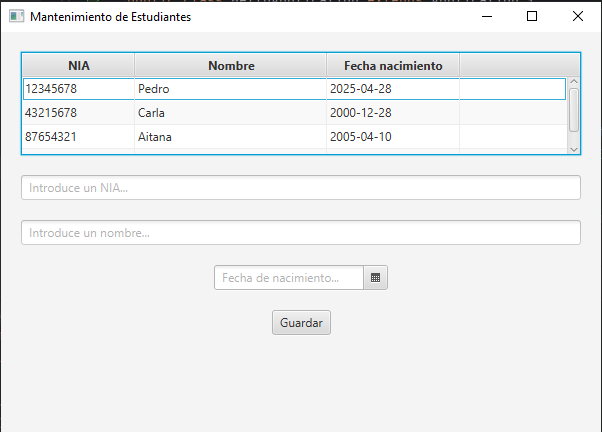
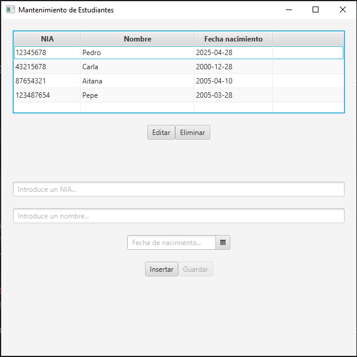
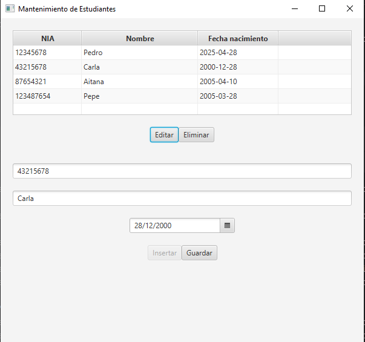

CRUD es el acronimo de Create, Read, Update and Delete (Crear, Leer, Actualizar y Borrar), que se usa para referirse a las funciones básicas en bases de datos.
a) Debes crear para Estudiantes una pantalla de mantenimiento similar a la realizada anteriormente en la Práctica 1 con JavaFX, donde almacenábamos la info escrita en dos TextField en una lista mediante el botón Guardar y la mostrábamos en una TableView.

La fecha de nacimiento es un elemento FXML de tipo DatePicker, y el tipo de dato LocalDate.
La diferencia es que ahora cuando clickemos en Guardar tendremos que almacenar a los estudiantes en una tabla de BD, y no en una lista estática (se cambia el .add() por un INSERT).
b) Para mostrar los datos de los estudiantes guardados en una TableView, realizaremos una consulta (select) a la BD, almacenaremos los resultados en una lista ObservableList (como en el apartado 8.2.5.) y se la devolveremos a la tabla para que la imprima.
Para mostrar el formato correcto de la columna de la fecha de nacimiento debe configurarse en el método initialize() de la siguiente manera:
columnaFechaNac.setCellValueFactory(data ->
new ReadOnlyObjectWrapper<>(data.getValue().getFecha_nacimiento())
);c) Cámbiale el nombre al botón Guardar: llámalo Insertar. Añade tres botones más a tu app: Actualizar, Eliminar y Guardar (que ahora servirá para otra cosa).

El botón Guardar estará inhabilitado por defecto.
d) El botón Eliminar debe lanzar una instrucción a la BD de tipo DELETE, con los valores de los campos a eliminar del registro de la tabla que esté seleccionado.
Para obtener los valores de la fila seleccionada y poder construir el WHERE del DELETE, usa este código de referencia:
Estudiante seleccionado = tablaEstudiantes.getSelectionModel().getSelectedItem();
if (seleccionado != null) {
Mantenimiento.borrar(bd,seleccionado);
}else{
System.out.println("No hay ninguna fila seleccionada.");
}e) Además, al seleccionar una fila en la TableView y hacer click en Editar, se cargarán los datos visiblemente en los TextField y DatePicker para poder editarlos.
Estudiante seleccionado = tablaEstudiantes.getSelectionModel().getSelectedItem();
if (seleccionado != null) {
niaTextField.setText(String.valueOf(seleccionado.getNia()));
nombreTextField.setText(seleccionado.getNombre());
fechaNacPicker.setValue(seleccionado.getFecha_nacimiento());
}else{
System.out.println("No hay ninguna fila seleccionada.");
}
Se habilitará el botón Guardar y se inhabilitará el botón Insertar mientras dure la edición. Usa esto para modificar la propiedad de habilitar / inhabilitar los botones:
boton.setDisable(true);f) El click en el botón Guardar hará un UPDATE a la tabla de la BD con los valores que tengan los TextField y DatePicker en el momento de ser presionado. Cuando finalice la edición, se debe volver a inhabilitar el botón Guardar y restablecer como habilitado el botón Insertar.